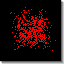

|  |
Mouse TrapsBy Gabriel Catalin Balan |
A reimplementation of the original Mouse Trap example from Swarm. The floor is covered with a grid of mouse traps, each holding a ping-pong ball. Each time a ping-pong ball lands on an unsprung mouse trap, it fires the ball back up, plus the mouse trap's own ball, at random trajectories. If a ball hits a sprung mouse trap, the ball disappears. A single ball is dropped in the center of the field to start, and chaos ensues.
Our implementation has a slight twist: we track the 3D trajectories of the balls. This enables the 3D Mouse Traps example elsewhere.